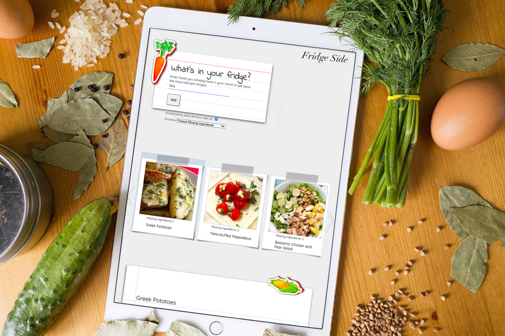

Hello
I'm Louis, a full-stack developer with a background in art, creative writing, and philosophy.
About Me
As a degree holder and former tutor in philosophy, I've studied some interesting topics related to computer science including:
- Plato's realm of the forms, which would later become the origins of object inheritance.
- Formal logic systems like symbolic logic, and Aristotle's categorical syllogism.
- Wittgenstein's Tractatus and the philosophy of language, meaning, and syntax.
- Concept theory (which deals with prototypal inheritance).
In addition to that, I'm a talented creative, and lifelong artist, which I think shows in my technical projects.
If you like my work, let's talk!
My Projects
Spiral - Mindfulness, Productivity.
Spiral provides a framework for breaking down your daily work tasks into manageable timeframes.
Challenge yourself to stay focused and work faster on a task, and let Spiral reward you with a break period when you're finished.
Use Spiral for all your work tasks to take advantage of inbuilt time tracking and productivity insights.

Quik - Dating, Meetup.
Quik is different from other dating apps in that it isn't designed for you to swipe endlessly, and rarely if ever meet with a person in real life.
Just the opposite, with Quik you pin locations you're already interested in going to and then start to look for potential matches from there.
To add to the mystery (and also provide a layer of security), you won't know the exact location you matched with anyone until you mutually agree to reveal it.

Tech Stack
React, Node.js, Express, Socket.io, Knex, Postgres, Leaflet Maps API & The Foursquare API.
LiveGitHub
Native Mobile
Darkhorse - Daily Fantasy Sports
Darkhorse is for the sports fan who also likes strategy games, but thinks that knowing every detail about every player is a bit too time consuming.
With darkhorse you draft a single player then use your remaining salary cap to buy additional game stats.
If you choose an underrated 'dark horse' player, you'll keep more funds for stat buying.
Spend wisely and you'll help your player hit key achievements that boost his score above the competition.

Tech Stack
Xcode, Swift, Google Cloud Platform, Firebase, Node.js, and the Cheerio web scraping API.
Android Studio, Java
Links
iOS InstallGitHub (V.2 Android/Java)
Testing Note
Darkhorse is available for iPhone through TestFlight, which is Apple's beta testing software.
To install TestFlight on an iPhone, follow the 'iOS Install' link below. Once installed, open TestFlight (or return to the download link again) to install Darkhorse.
The full Xcode/Swift repo has been kept private, but I've included the full code for a working Android prototype, as well as a sample of the Node.js web scraper that works with GCP and Firebase to power the backend.
jQuery
Fridge-Side
Fridge-Side
Fridge-side is a recipes search app with a memorable UI that lets you find new recipes based on ingredients you already have in your home.
After adding missing ingredients to a shopping list, Fridge-side lets you send the list to your phone via SMS for easy access next time you're grocery shopping.
Go ahead and give it a try!
Tech Stack
HTML, CSS, jQuery, Node.js, Express, Twillio, and the Spoonacular API
LiveGitHub
Gattaca Science Quiz
Gattaca Science Quiz
A small homage to one of my favorite movies -- Gattaca. Test your science knowledge with 6 questions based on true science in the movie.
Tech Stack
HTML, CSS, jQuery
LiveGitHub